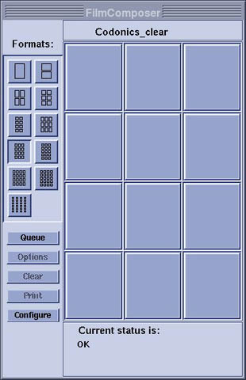
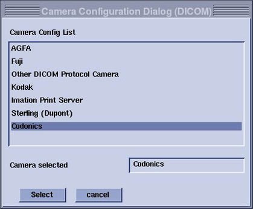
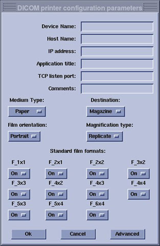
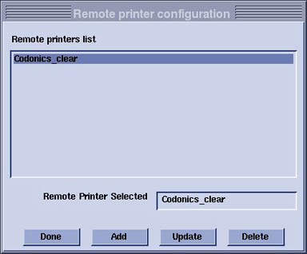

Operating Documentation
Direction 5500113, Rev# 3
Discovery MR750 3.0T Service Methods
Module Version 4.0, Version Date 11/17/08
Operating Documentation |
| Required Persons | Preliminary Reqs | Procedure | Finalization |
|---|---|---|---|
| 1 | Not Applicable | 25 mins | Not Applicable |
The DICOM Print feature allows configuration of the filming function to accommodate filming to any paper or film printer that is networked to the workstation through a DICOM printer.
When upgrading from Release 8.2.5 to 8.3, some vendor DICOM print equipment will need to be reconfigured to accept the new DICOM print AETitle. The old AETitle was Print_SCU; the new AETitle is hostname_DCP where hostname_DCP is the hostname of the computer (e.g., a hostname of signa has an AETitle of signa_DCP). This information must be given to the camera vendor to input the new AETitle name for cameras like the Kodak/Imation 8410 that require that the AETitle be pre-configured.
With HDMR 12.0 and all subsequent product releases, the Film Composer supports DICOM Color printing. If your paper printer supports DICOM Color, you will want to use DICOM as opposed to Postscript format. The setup for DICOM greyscale and color paper is identical—the printer and scanner will determine if the image is color or grayscale and set elements in the DICOM header appropriately. In the Film Composer setup, you need to select the appropriate media type (paper) and film size. There is no explicit configuration for color versus grayscale.
Boot system to Application level.
Start the Mini-Viewer and select [Film Composer] from the menu.
Select [Configure] option on the Film Composer GUI. See Illustration 1,
Illustration 1: Film Composer GUI

Click [Add].
A new GUI will appear called “Type of Laser Camera”. Click [DICOM.].
A list of possible printers will appear. Select the printer being used. See Illustration 2.
Illustration 2: Camera Configuration

After selecting the camera, the [Configuration GUI] will appear. Fill in necessary information. When done, click [OK] to configure the printer. For the Codonics Printer see Table 1. Also see Illustration 3.
Table 1: Codonics Printer Configuration Values
| Parameter | Value |
| Device name | Codonics_Clear |
| Hostname | horizon |
| IP address | See network administrator |
| AE title | SCP |
| Port | 104 |
| Film type can be Clear Film, Blue Film, or Paper | |
| NOTE: | Contact camera vendors for other printer types. |
Illustration 3: Codonics Printer Parameters

| NOTE: | Paper size can be selected by clicking on the “Advanced” option. |
Boot Signa to Application level.
Start the Mini-Viewer and select [Film Composer] from the menu.
Select [Configure] option on the Film Composer GUI. See Illustration 1.
Click [Add] option from the Remote printer configuration GUI. See Illustration 4.
Illustration 4: Remote Printer Configuration

Then select Postscript camera to be configured.
Enter the applicable information in the PS printer configuration parameters GUI. See Illustration 5.
Illustration 5: Printer Configuration Parameters

Click [OK] to complete the printer configuration.
After camera configuration, create a test film.
Ensure the system is working before turning over to customer.